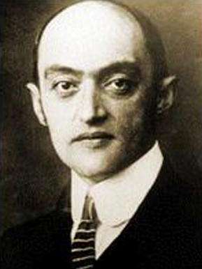

Você já ouviu falar de Joseph Schumpeter? Vamos iniciar este módulo falando sobre ele, pois não poderíamos introduzir o conceito de inovação sem mencionar o seu nome já que ele é considerado “pai do conceito de inovação”.
Joseph Schumpeter foi um economista e cientista político austríaco. Considerado um dos mais importantes economistas da primeira metade do século XX, e um dos primeiros a reconhecer as inovações tecnológicas como motores do desenvolvimento capitalista.
Ele se notabilizou pelo conceito de destruição criativa através do qual explica o papel da inovação e do empreendedor no desenvolvimento econômico e no fortalecimento das empresas. Este conceito está relacionado ao processo incessante de transformação de novos produtos que destroem empresas e modelos de negócios antigos.
Ele usou a palavra inovação para descrever uma série de novidades que podem ser introduzidas no sistema econômico e que alteram consideravelmente as relações entre produtores e consumidores, que segundo Schumpeter, era o elemento fundamental para o desenvolvimento econômico.
Estudiosos anteriores a Schumpeter tinham consciência da importância do progresso tecnológico para o desenvolvimento econômico. Mas foi somente a partir de seus trabalhos que o progresso tecnológico volta a ser estudado como um elemento fundamental para o desenvolvimento econômico em economias capitalistas.
Vamos refletir um pouco sobre a destruição criativa. Vamos fazer um pequeno exercício. Pense nas tecnologias ou serviços que você desfrutou há uns 10 anos atrás e que hoje não existem mais ou que foram completamente modificados. Por exemplo: Serviços de locação de filmes foram completamente substituídos pelos serviços de streaming. A extinção do VHS e ascensão do DVD e em seguida do Blue-ray, entre outros. Poderíamos mencionar muitos e muitos exemplos. E essa incessante transformação (ou destruição criativa) de tecnologias e serviços é que segundo Schumpeter é um motor crucial para o desenvolvimento econômico.
 O dinamismo para a inovação tecnológica perpassa pela interação da Ciência e Tecnologia (C&T). Esta interação é envolvida pela destruição criativa cunhada pelo pai da inovação, Schumpeter, na década de 50. Clique aqui para ler o texto "A destruição criativa da evolução tecnológica nos demite?".
O dinamismo para a inovação tecnológica perpassa pela interação da Ciência e Tecnologia (C&T). Esta interação é envolvida pela destruição criativa cunhada pelo pai da inovação, Schumpeter, na década de 50. Clique aqui para ler o texto "A destruição criativa da evolução tecnológica nos demite?".
{kind=link}